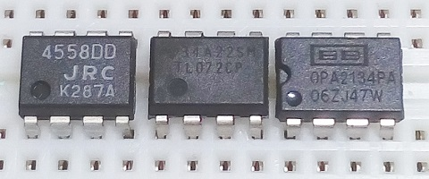
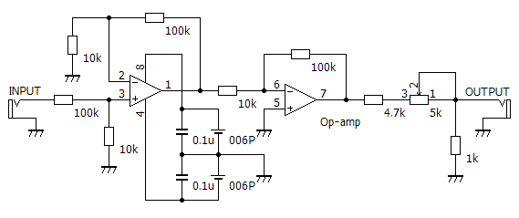
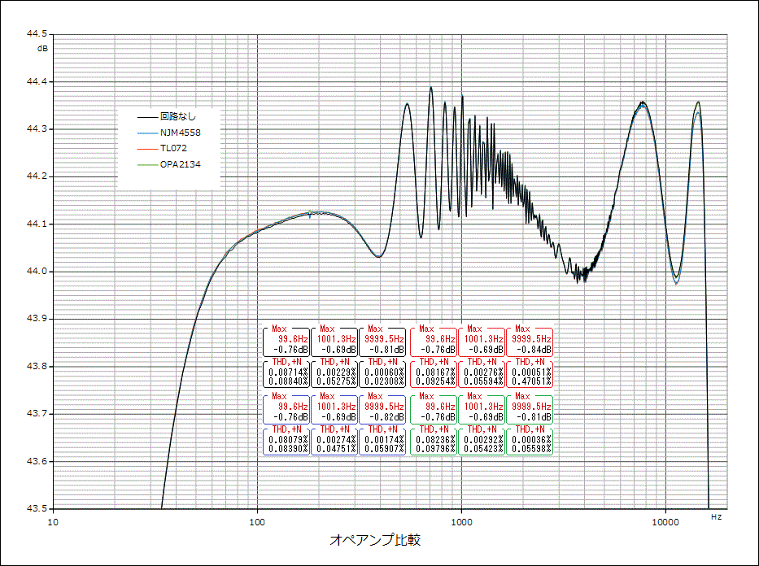
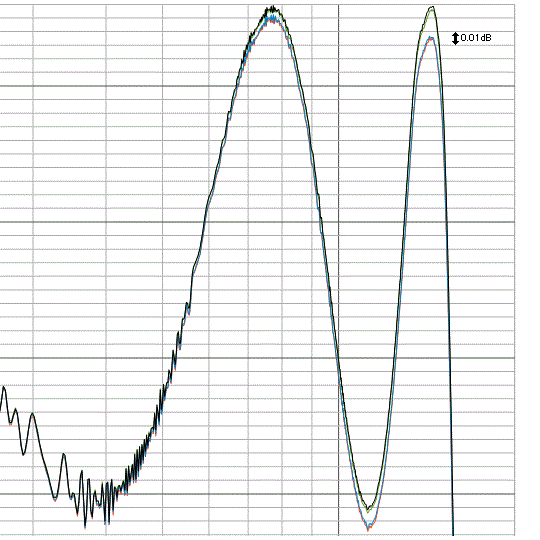

オペアンプで音は変わるのか
2017年06月27日 カテゴリー：○○で音は変わるのか
※他の測定でわかった通り、歪率や周波数特性の測定はあまり意味がない気がしますが、失敗例として記事にしていこうと思います。音の変化には歪率や周波数特性以外の何らかの特性が関係していて、それは結局自分の耳で確かめるしかないのだろうと思います。
「サウンド･クリエイターのための電気実用講座」という書籍の中で、オペアンプの比較試聴テストについて記載があります。それによると、アナログ録音・完全なブラインドテストで、オペアンプによるサウンド・キャラクタの違いは明確にわかったとのことです。歪率や周波数特性についても違いが出てくるのか比較してみます。
使用したオペアンプは以下の3種類です。

・NJM4558DD （1個20円）
・TL072CP （1個85円）
・OPA2134PA （1個300円）
▽回路図

電気実用講座では増幅率11倍でしたが、差が出やすいよう110倍にしました。PCの出力は約0.3Vrmsです。
▽結果 ※縦軸をかなり拡大

（10kHz付近をさらに拡大）

4558の10kHzの歪率が少しだけ悪くなっていますが、他は差がなさそうです。周波数特性はほぼ重なりました。もっと増幅率を上げれば少しは差が出てくるかもしれません。高域では4558と072が約0.02dB下がっている程度で、ごくわずかな違いとなっています。オペアンプの性能を改めて実感しました。